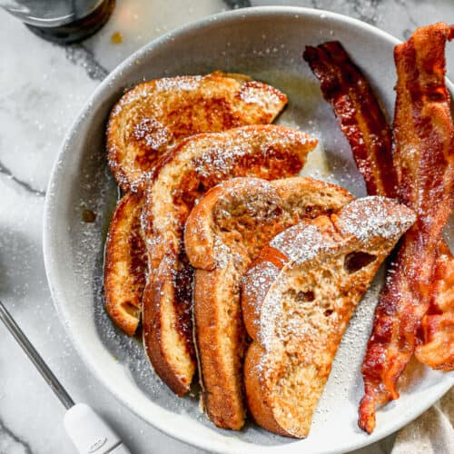

French Toast

Description
This easy French Toast recipe is the BEST, with a thicker batter and cinnamon sugar flavors that really set it apart. It's one of our family's favorite breakfasts!
Ingredients
- 4 large eggs
- 2/3 cup milk
- 1/4 cup all-purpose flour
- 1/4 cup granulated sugar
- 1/4 tsp salt
- 1 tsp ground cinnamon
- 1 tsp vanilla extract
- 8 thick slices bread
Steps
- Preheat griddle to 350 degrees F or or heat a skillet over medium heat.
- In a blender, add the eggs, milk, sugar, salt, cinnamon, and vanilla. Blend until smooth. If you prefer whisking by hand, start by mixing the flour and eggs together in a shallow dish, then whisk in the rest of the ingredients until combined.
- Dip bread slices into the batter, dredging them well on both sides, and place on hot, greased griddle or skillet.
- Cook for a few minutes, until the bottom of the breads starts to get golden brown. Flip and cook on the other side the same.
- Remove to a plate. Serve warm with syrup and a sprinkle of powdered sugar.